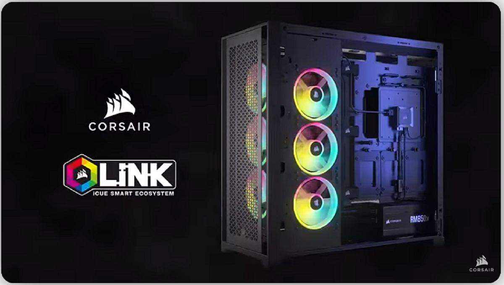

Corsair iCue Link
Главной тенденцией в сборке компьютеров в нынешнем году является желание избавиться от кабелей. До появления новых материнских плат, системных блоков и видеокарт с возможностью прокладывать кабели подальше от центра компьютера остаётся несколько месяцев, а вот система охлаждения производства Corsair будет представлена уже летом. Она называется iCue Link и позволяет последовательное соединение нескольких вентиляторов, системы охлаждения «всё в одном» и резервуаров с охлаждающей жидкостью на одной линии кабелей.